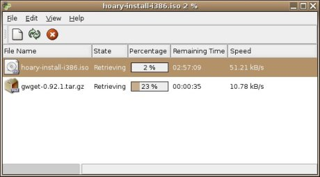

About Gwget
Gwget it's a download manager for the Gnome Desktop. The main features are:
- Resume: By default, gwget tries to continue any download.
- Notification: Gwget tries to use the Gnome notification area support, if available. You can close the main window and gwget runs in the background.
- Recursivity: Gwget detects when you put a html, php, asp or a web page dir in the url to download, and ask you to only download certain files (multimedia, only the index, and so on).
- Drag & Drop: You can d&d a url to the main gwget window or the notification area icon to add a new download.
- Firefox Extension: Fireget
Lastest News
12 Feb 2009. Gwget 1.00Download: [ tgz ] [ bz2 ]
Features:
- Support m3u filenames: When gwget finishes downloading an .m3u file, it asks the user whether it should download the files that it contains. If yes, the files will be added as additional downloads. (Michael Fotsch)
Fixes:
- Better log parsing (Rick Benson)
- Translate --help output (Gabor Kelemen)
- Destination dir command line option works with open gwget.
- View menu items as checkboxes instead of radiobuttons
- All options in recursive dialog marked.
Other:
Port to GIO and get rid of gnome-vfs for local operations.
Translations:

|
|
{kind=link}